What's new with Chart2Code benchmark
TL;DR: We introduce Chart2Code, a new benchmark designed to evaluate chart generation capabilities of LMMs under progressively challenging conditions. There are five tasks in the Chart2Code benchmark.
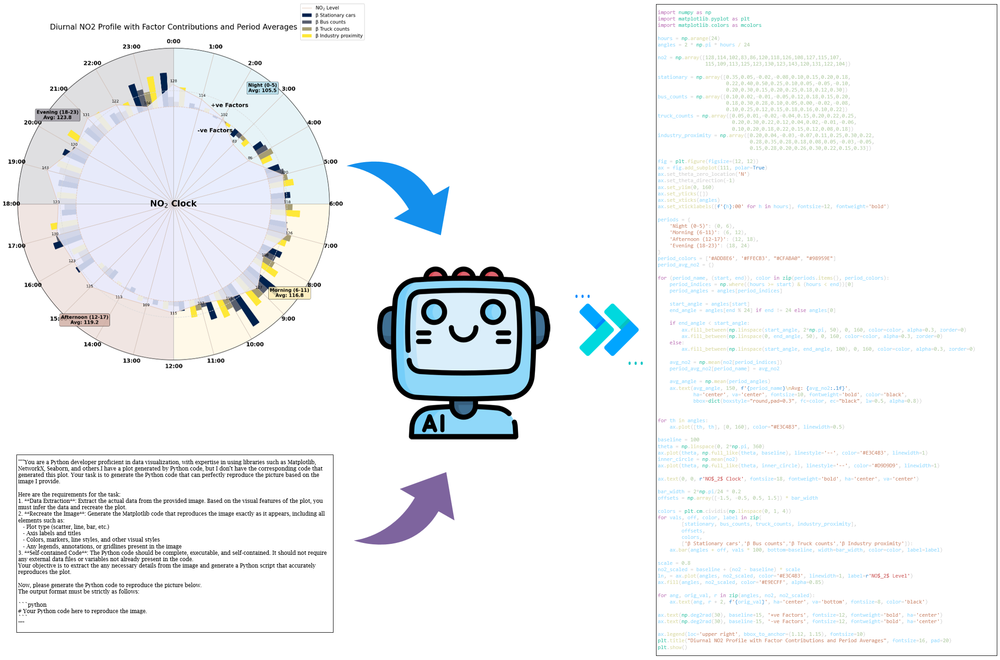
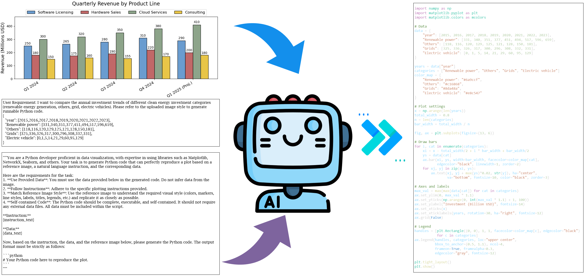
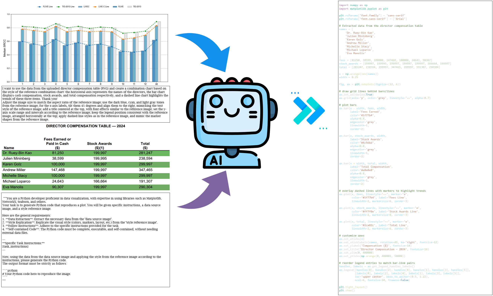
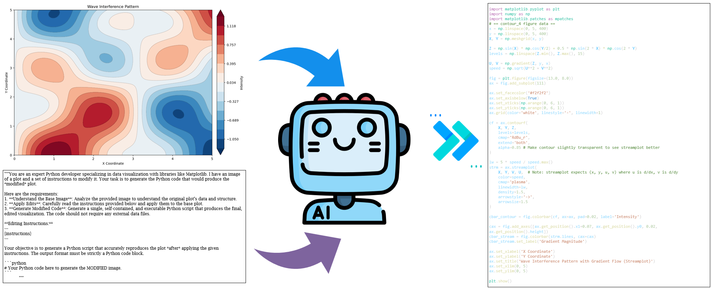
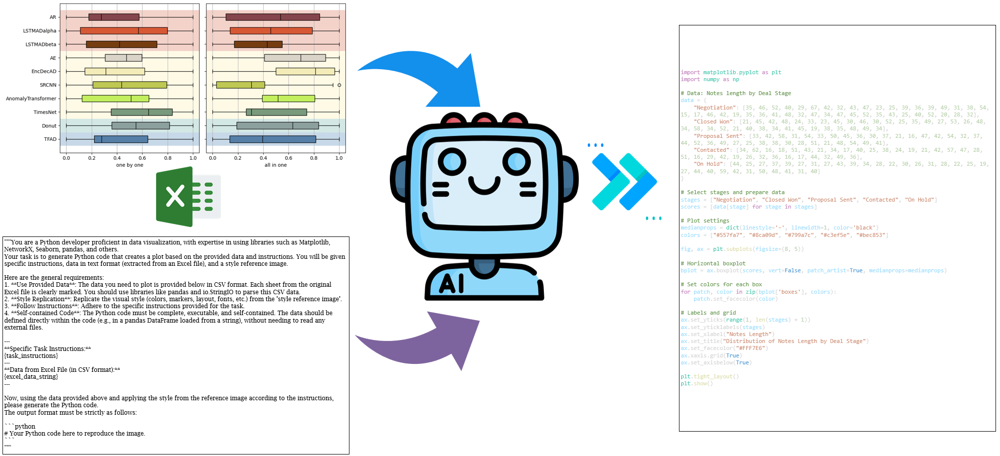
Overview
Chart2Code is a new benchmark for evaluating the chart understanding and code generation capabilities of large multimodal models. Chart2Code is explicitly designed from a user-driven perspective, capturing diverse real-world scenarios and progressively increasing task difficulty.
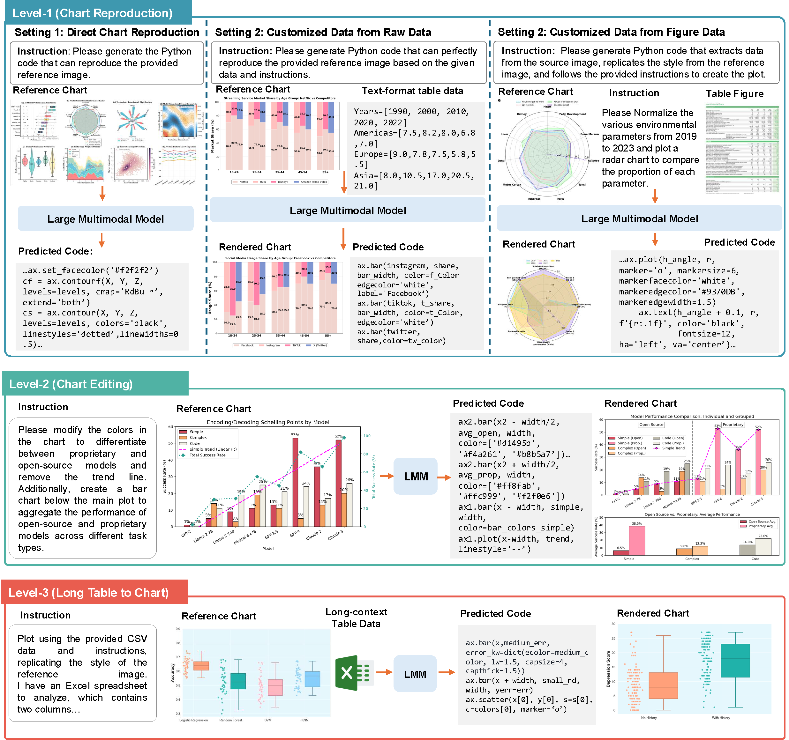
To our knowledge, Chart2Code is the first hierarchical benchmark that reflects practical chart2code usage while systematically scaling task complexity. It consists of three levels as illustrated in above figure:
Level1(Chart Reproduction) reproduces charts from a reference figure and user query;
Level2(Chart Editing) involves complex modifications such as changing chart types or adding elements;
Level3(Long-Table to Chart Generation) requires models to transform long, information-dense tables into faithful charts following user instructions.
Data Statistic
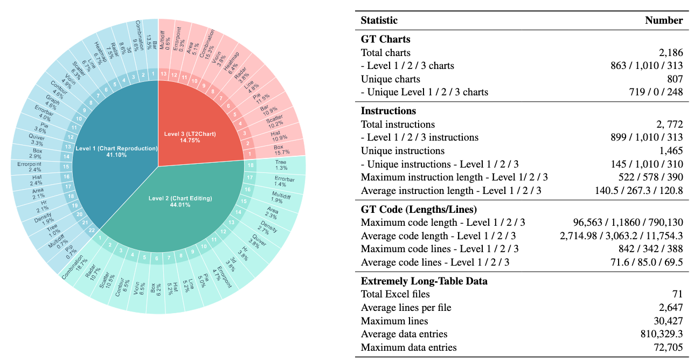
In total, Chart2Code contains 2,023 tasks across 22 chart types, paired with multi-level evaluation metrics that assess both code correctness and the visual fidelity of rendered charts.
Benchmark Comparison
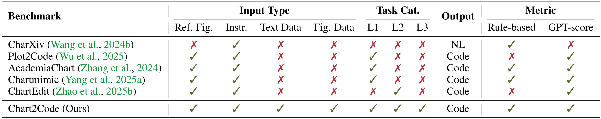
Table 1: Chart2Code is a unique benchmark featuring a more comprehensive set of tasks that better reflect real-world scenarios.
Comparison of existing chart-to-code benchmarks.: Chart2Code is a new benchmark designed to rigorously evaluate chart generation capabilities of LMMs under progressively challenging conditions. This hierarchical design reflects real-world usage while progressively increasing difficulty, and its distinctions from prior benchmarks are highlighted in the above table.
Human-Model Performance Comparison
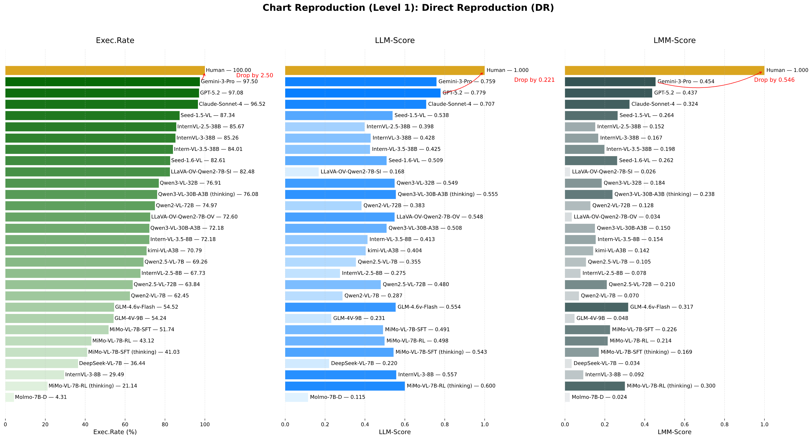
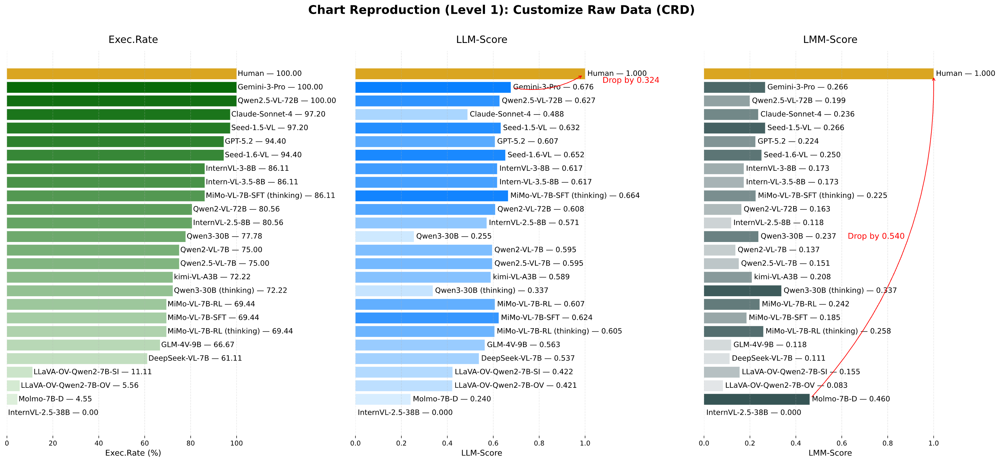
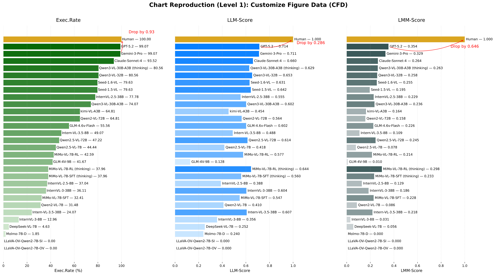
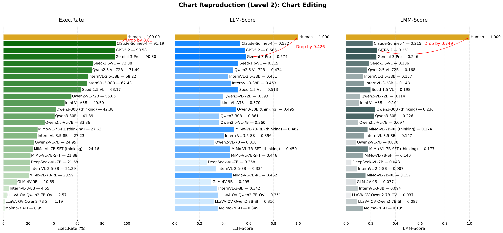
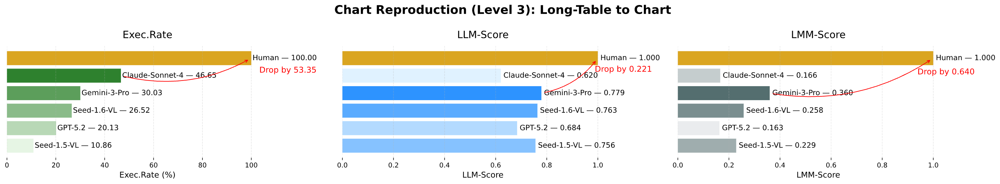
| Model | Direct Reproduction(DR) | Customize Raw Data(CRD) | Customize Figure Data(CFD) | |||||||||
|---|---|---|---|---|---|---|---|---|---|---|---|---|
| Exec.Rate | Base | LLM | LMM | Exec.Rate | Base | LLM | LMM | Exec.Rate | Base | LLM | LMM | |
| Proprietary | ||||||||||||
| Gemini-3-Pro | 97.50 | 78.65 | 75.86 | 45.42 | 100.0 | 69.23 | 69.76 | 40.72 | 99.07 | 70.78 | 71.12 | 32.85 |
| Claude-Sonnet-4 | 96.52 | 65.60 | 70.69 | 32.36 | 100.0 | 61.46 | 55.03 | 40.63 | 93.52 | 65.27 | 65.99 | 26.44 |
| GPT-5.2 | 97.08 | 79.91 | 77.88 | 43.73 | 97.22 | 66.31 | 65.51 | 39.26 | 99.07 | 73.02 | 71.42 | 35.40 |
| Seed-1.5-VL | 87.34 | 63.85 | 53.84 | 26.40 | 97.22 | 65.76 | 58.73 | 34.74 | 79.63 | 65.58 | 64.19 | 19.53 |
| Seed-1.6-VL | 82.61 | 62.46 | 50.85 | 26.16 | 94.44 | 60.69 | 57.87 | 28.44 | 79.63 | 66.22 | 63.12 | 25.51 |
| Open-Source LMMs (non-thinking) | ||||||||||||
| LLaVA-OV-Qwen2-7B-SI | 82.48 | 31.33 | 16.81 | 2.58 | 19.44 | 49.73 | 35.93 | 15.14 | 0.00 | - | - | - |
| LLaVA-OV-Qwen2-7B-OV | 72.60 | 34.33 | 54.85 | 3.42 | 8.33 | 32.68 | 15.67 | 6.00 | 0.00 | - | - | - |
| DeepSeek-VL-7B | 36.44 | 37.49 | 22.02 | 3.37 | 55.56 | 50.73 | 29.28 | 9.25 | 4.63 | 30.37 | 25.20 | 5.60 |
| kimi-VL-A3B | 70.79 | 52.76 | 40.36 | 14.15 | 66.67 | 50.29 | 46.85 | 33.04 | 64.81 | 53.62 | 45.36 | 16.41 |
| Qwen2-VL-7B | 62.45 | 40.99 | 28.74 | 7.02 | 77.78 | 52.21 | 44.50 | 19.61 | 31.48 | 51.02 | 41.03 | 8.65 |
| Qwen2-VL-72B | 74.97 | 50.74 | 38.27 | 12.75 | 86.11 | 56.02 | 46.89 | 28.23 | 64.81 | 59.66 | 56.41 | 15.81 |
| InternVL-2.5-8B | 67.73 | 42.76 | 27.49 | 7.80 | 69.44 | 54.16 | 42.80 | 25.88 | 37.04 | 51.58 | 38.81 | 12.85 |
| InternVL-2.5-38B | 85.67 | 51.97 | 39.83 | 15.18 | 86.11 | 55.74 | 47.98 | 24.71 | 77.78 | 59.86 | 55.51 | 22.88 |
| InternVL-3-8B | 29.49 | 46.58 | 55.68 | 9.20 | 36.11 | 53.47 | 31.38 | 6.23 | 12.96 | 50.73 | 35.61 | 3.14 |
| InternVL-3-38B | 85.26 | 53.57 | 42.85 | 16.68 | 86.11 | 58.17 | 51.10 | 34.00 | 36.11 | 60.17 | 60.42 | 18.56 |
| GLM-4V-9B | 54.24 | 32.50 | 23.12 | 4.80 | 75.00 | 50.35 | 42.91 | 19.70 | 41.67 | 31.64 | 12.84 | 1.00 |
| GLM-4.6v-Flash | 54.52 | 66.67 | 55.38 | 31.70 | 61.11 | 63.44 | 52.75 | 32.45 | 55.56 | 65.64 | 60.23 | 22.57 |
| Intern-VL-3.5-8B | 72.18 | 52.01 | 41.29 | 15.41 | 69.44 | 37.87 | 14.58 | 1.68 | 49.07 | 53.18 | 48.85 | 10.87 |
| Intern-VL-3.5-38B | 84.01 | 55.78 | 42.54 | 19.78 | 86.11 | 60.66 | 53.16 | 38.83 | 24.07 | 61.15 | 60.69 | 21.84 |
| MiMo-VL-7B-RL | 43.12 | 64.41 | 49.82 | 21.43 | 66.67 | 59.73 | 52.21 | 25.38 | 42.59 | 64.39 | 57.68 | 21.44 |
| MiMo-VL-7B-SFT | 51.74 | 63.99 | 49.07 | 22.61 | 75.00 | 53.34 | 37.80 | 22.74 | 32.41 | 64.68 | 54.74 | 22.83 |
| Qwen2.5-VL-7B | 69.26 | 48.20 | 35.46 | 10.54 | 83.33 | 55.42 | 46.72 | 20.14 | 44.44 | 50.30 | 41.78 | 7.81 |
| Qwen2.5-VL-72B | 63.84 | 59.05 | 47.95 | 20.97 | 94.44 | 58.12 | 50.97 | 27.53 | 47.22 | 63.95 | 61.37 | 24.48 |
| Molmo-7B-D | 4.31 | 25.26 | 11.48 | 2.42 | 2.78 | 70.30 | 40.00 | 4.00 | 1.85 | 45.58 | 24.00 | 0.00 |
| Qwen3-VL-30B-A3B | 72.18 | 63.09 | 50.84 | 15.03 | 69.44 | 55.84 | 52.26 | 23.28 | 74.07 | 63.02 | 60.23 | 23.56 |
| Qwen3-VL-32B | 76.91 | 63.10 | 54.87 | 18.44 | 77.78 | 60.49 | 52.64 | 36.79 | 80.56 | 66.64 | 65.27 | 25.84 |
| Open-Source LMMs (thinking) | ||||||||||||
| MiMo-VL-7B-RL | 21.14 | 70.45 | 60.00 | 30.04 | 75.00 | 64.58 | 57.96 | 24.96 | 37.96 | 68.05 | 64.38 | 29.83 |
| MiMo-VL-7B-SFT | 41.03 | 65.49 | 54.33 | 16.95 | 77.78 | 61.33 | 53.89 | 29.93 | 37.96 | 64.04 | 56.04 | 23.29 |
| Qwen3-VL-30B-A3B | 76.08 | 62.37 | 55.48 | 23.83 | 61.11 | 64.78 | 57.63 | 35.00 | 80.56 | 66.57 | 62.86 | 26.34 |
| Model | Exec. Rate |
Code-Level | Chart-Level LMM-Score |
|||||||||
|---|---|---|---|---|---|---|---|---|---|---|---|---|
| Color | Grid | Layout | Legend | Visual | Data | Text | Type | Base | LLM | |||
| Proprietary | ||||||||||||
| Gemini-3-Pro | 97.23 | 52.32 | 75.31 | 86.45 | 63.33 | 81.58 | 62.75 | 77.16 | 93.86 | 70.78 | 72.21 | 33.41 |
| Claude-Sonnet-4 | 90.20 | 47.17 | 65.29 | 55.32 | 56.51 | 81.50 | 54.88 | 80.52 | 93.29 | 63.65 | 66.45 | 25.40 |
| GPT-5.2 | 96.04 | 58.44 | 80.83 | 61.51 | 58.16 | 84.65 | 64.66 | 83.77 | 94.52 | 70.93 | 75.66 | 33.03 |
| Seed-1.5-VL | 60.20 | 44.39 | 69.37 | 52.06 | 52.80 | 79.85 | 52.02 | 77.21 | 92.66 | 61.67 | 65.45 | 18.30 |
| Seed-1.6-VL | 70.00 | 43.61 | 69.37 | 52.25 | 51.32 | 79.70 | 53.11 | 79.46 | 92.32 | 61.77 | 65.40 | 17.43 |
| Open-Source LMMs (non-thinking) | ||||||||||||
| LLaVA-OV-Qwen2-7B-SI | 2.57 | 15.35 | 59.38 | 53.85 | 30.79 | 56.34 | 22.59 | 52.70 | 55.33 | 38.43 | 37.40 | 6.40 |
| LLaVA-OV-Qwen2-7B-OV | 1.68 | 15.37 | 63.48 | 38.24 | 64.56 | 50.15 | 18.13 | 48.81 | 58.43 | 39.07 | 35.44 | 7.35 |
| DeepSeek-VL-7B | 30.46 | 15.32 | 42.58 | 34.44 | 26.24 | 52.95 | 22.36 | 51.56 | 68.43 | 35.16 | 26.87 | 4.20 |
| kimi-VL-A3B | 50.69 | 26.22 | 64.50 | 40.68 | 39.93 | 66.08 | 34.05 | 64.97 | 83.03 | 47.96 | 44.43 | 9.01 |
| Qwen2-VL-7B | 24.55 | 18.72 | 57.60 | 41.87 | 32.73 | 58.65 | 25.41 | 55.07 | 76.38 | 41.06 | 34.82 | 5.27 |
| Qwen2-VL-72B | 57.23 | 27.82 | 64.07 | 42.86 | 40.59 | 69.53 | 36.83 | 64.35 | 84.76 | 49.55 | 39.88 | 10.02 |
| InternVL-2.5-8B | 24.06 | 23.86 | 62.25 | 41.21 | 36.70 | 65.03 | 32.72 | 62.46 | 81.14 | 46.20 | 41.14 | 7.48 |
| InternVL-2.5-38B | 30.30 | 30.40 | 68.25 | 50.34 | 48.97 | 72.92 | 37.38 | 70.78 | 87.96 | 53.48 | 52.90 | 10.67 |
| InternVL-3-8B | 4.55 | 23.22 | 62.68 | 57.03 | 31.34 | 66.79 | 29.34 | 58.63 | 84.49 | 46.41 | 38.02 | 5.48 |
| InternVL-3-38B | 69.80 | 35.87 | 68.36 | 48.66 | 49.30 | 75.86 | 45.33 | 72.28 | 90.53 | 56.74 | 56.98 | 13.32 |
| GLM-4V-9B | 10.50 | 19.71 | 61.79 | 48.11 | 34.54 | 59.98 | 26.53 | 57.80 | 65.80 | 42.05 | 34.78 | 3.87 |
| GLM-4.6V-Flash | 18.22 | 48.06 | 69.23 | 50.13 | 51.20 | 81.56 | 54.78 | 77.90 | 91.86 | 62.76 | 63.25 | 17.91 |
| InternVL-3.5-8B | 37.52 | 29.55 | 68.21 | 43.87 | 41.56 | 69.85 | 39.58 | 67.41 | 83.82 | 51.30 | 49.52 | 9.71 |
| InternVL-3.5-38B | 4.26 | 44.11 | 92.54 | 67.22 | 60.24 | 72.35 | 40.38 | 76.53 | 88.56 | 62.64 | 57.48 | 8.28 |
| MiMo-VL-7B-RL | 17.23 | 42.72 | 70.76 | 54.30 | 46.81 | 74.50 | 49.23 | 74.57 | 89.75 | 59.42 | 56.95 | 14.54 |
| MiMo-VL-7B-SFT | 30.40 | 37.36 | 67.37 | 48.40 | 47.24 | 75.98 | 46.53 | 70.80 | 88.04 | 56.56 | 53.97 | 15.23 |
| Qwen2.5-VL-7B | 31.98 | 26.87 | 67.22 | 45.41 | 38.75 | 65.34 | 37.21 | 63.68 | 83.65 | 49.22 | 44.35 | 9.44 |
| Qwen2.5-VL-72B | 74.55 | 41.32 | 67.44 | 52.16 | 50.04 | 77.74 | 48.65 | 74.72 | 91.12 | 59.31 | 49.02 | 16.69 |
| Molmo-7B-D | 0.59 | 16.53 | 44.44 | 41.67 | 50.00 | 49.70 | 29.14 | 41.57 | 54.44 | 37.32 | 29.92 | 15.50 |
| Qwen3-VL-30B-A3B | 38.91 | 40.07 | 70.02 | 51.69 | 50.06 | 76.81 | 48.01 | 75.52 | 92.39 | 59.26 | 45.77 | 17.46 |
| Qwen3-32B | 63.76 | 42.90 | 71.98 | 50.76 | 52.24 | 77.96 | 52.35 | 77.43 | 92.09 | 61.30 | 64.15 | 18.27 |
| Open-Source LMMs (thinking) | ||||||||||||
| MiMo-VL-7B-RL | 26.14 | 42.47 | 69.05 | 48.47 | 45.96 | 80.76 | 50.41 | 74.80 | 90.56 | 59.53 | 61.04 | 17.81 |
| MiMo-VL-7B-SFT | 30.50 | 40.56 | 68.22 | 48.10 | 46.65 | 78.42 | 48.68 | 73.48 | 89.86 | 58.32 | 59.33 | 16.38 |
| Qwen3-VL-30B-A3B | 13.76 | 44.00 | 65.02 | 48.92 | 49.19 | 78.19 | 50.18 | 76.18 | 89.60 | 59.55 | 63.04 | 14.37 |
| Model | Exec. Rate |
Code-Level | Chart-Level LMM-Score |
|||||||||
|---|---|---|---|---|---|---|---|---|---|---|---|---|
| Color | Grid | Layout | Legend | Visual | Data | Text | Type | Base | LLM-Score | |||
| Proprietary | ||||||||||||
| Gemini-3-Pro | 30.03 | 56.29 | 83.71 | 92.55 | 68.39 | 84.00 | 62.26 | 80.45 | 96.60 | 74.28 | 77.90 | 35.97 |
| Claude-Sonnet-4 | 46.65 | 35.43 | 68.97 | 84.08 | 61.77 | 74.44 | 46.73 | 67.77 | 89.95 | 61.13 | 62.04 | 16.60 |
| GPT-5.2 | 20.13 | 34.46 | 82.14 | 80.87 | 52.64 | 78.34 | 43.56 | 76.09 | 93.81 | 61.99 | 68.40 | 16.29 |
| Seed-1.5-VL | 10.86 | 44.55 | 76.89 | 93.94 | 69.30 | 73.52 | 51.75 | 73.57 | 95.96 | 67.58 | 75.59 | 22.85 |
| Seed-1.6-VL | 26.52 | 44.26 | 82.28 | 95.48 | 74.73 | 75.42 | 52.62 | 77.82 | 86.47 | 68.6 | 76.35 | 25.77 |
Results Analysis
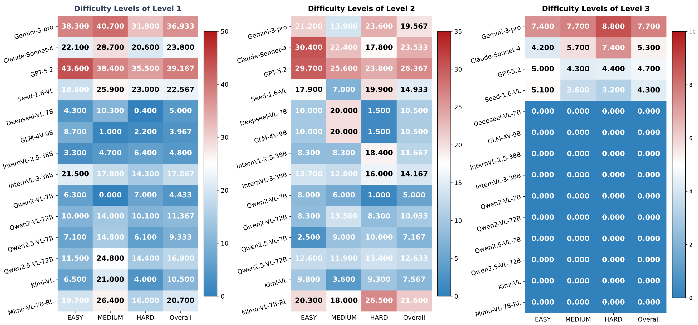
Correlation of the model performance (i.e., LMM-score) on different manually annotated difficulties (i.e., Easy, Medium, Hard) on Level 1, 2, 3, respectively.
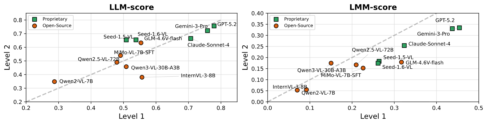
Left: Both proprietary and open-source models generalize well on Level 1 and Level 2 tasks when calculating the LLM-score for predicted code assessment. Right: Proprietary models tend to obtain higher LMM-scores on the Level 1 task rather than the Level 2, while open-source models perform poorly on both tasks (scores are lower than 0.5).
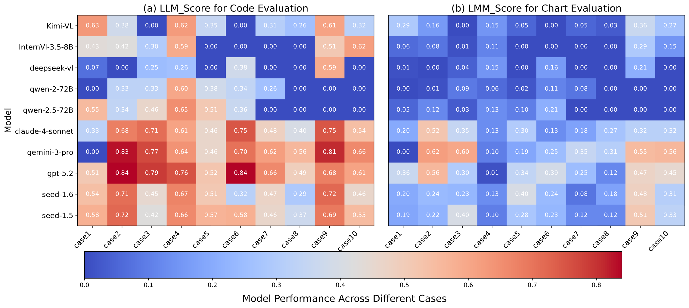
Analysis of model performance on different task cases with LLM-score and LMM-score.
Example of Data and Error Cases
An Example of Level 1: Direct Reproduction
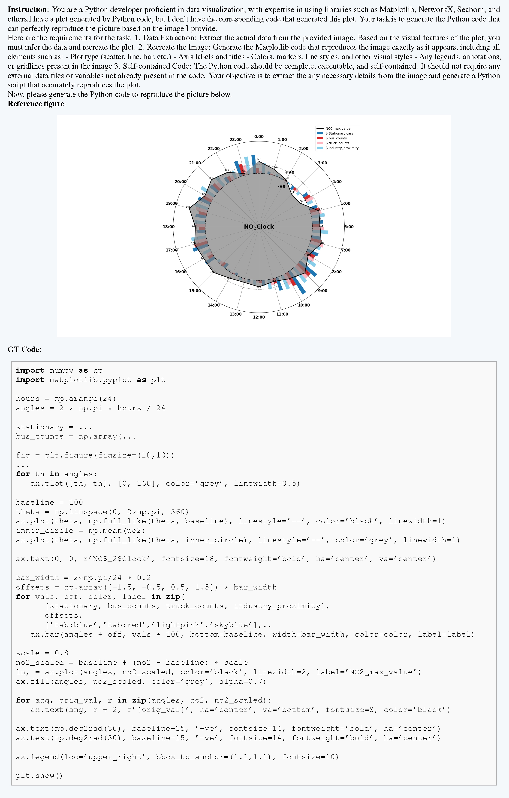
An Example of Level 1: Customized Text-Format Table Data
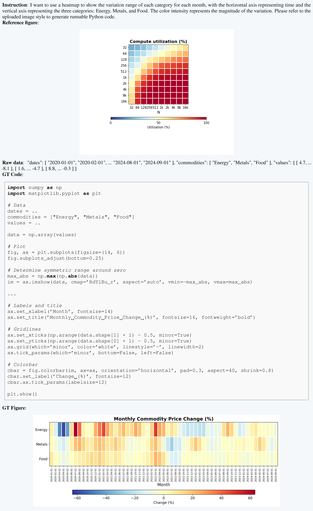
An Example of Level 1: Figure-Format Table Data
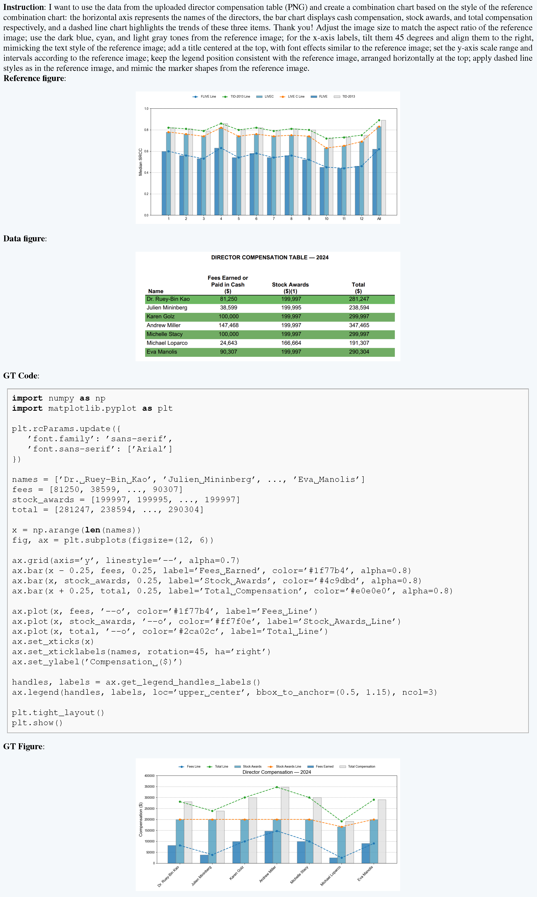
An Example of Level 2
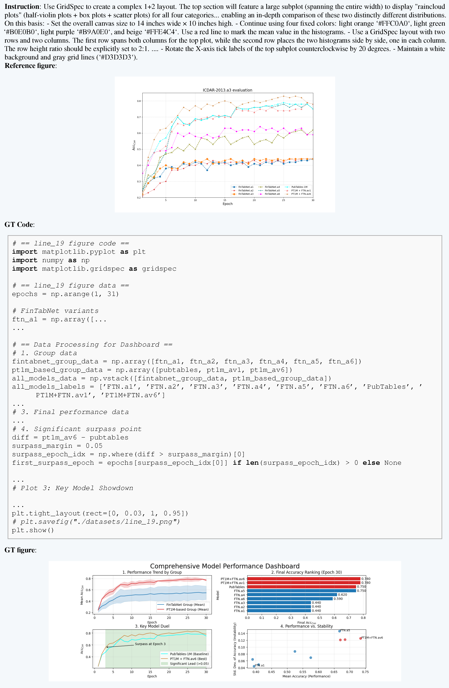
An Example of Level 3

Error Cases Visualization
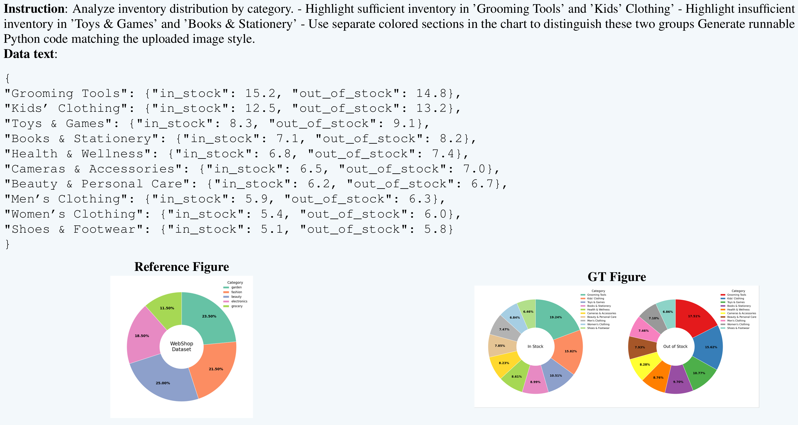
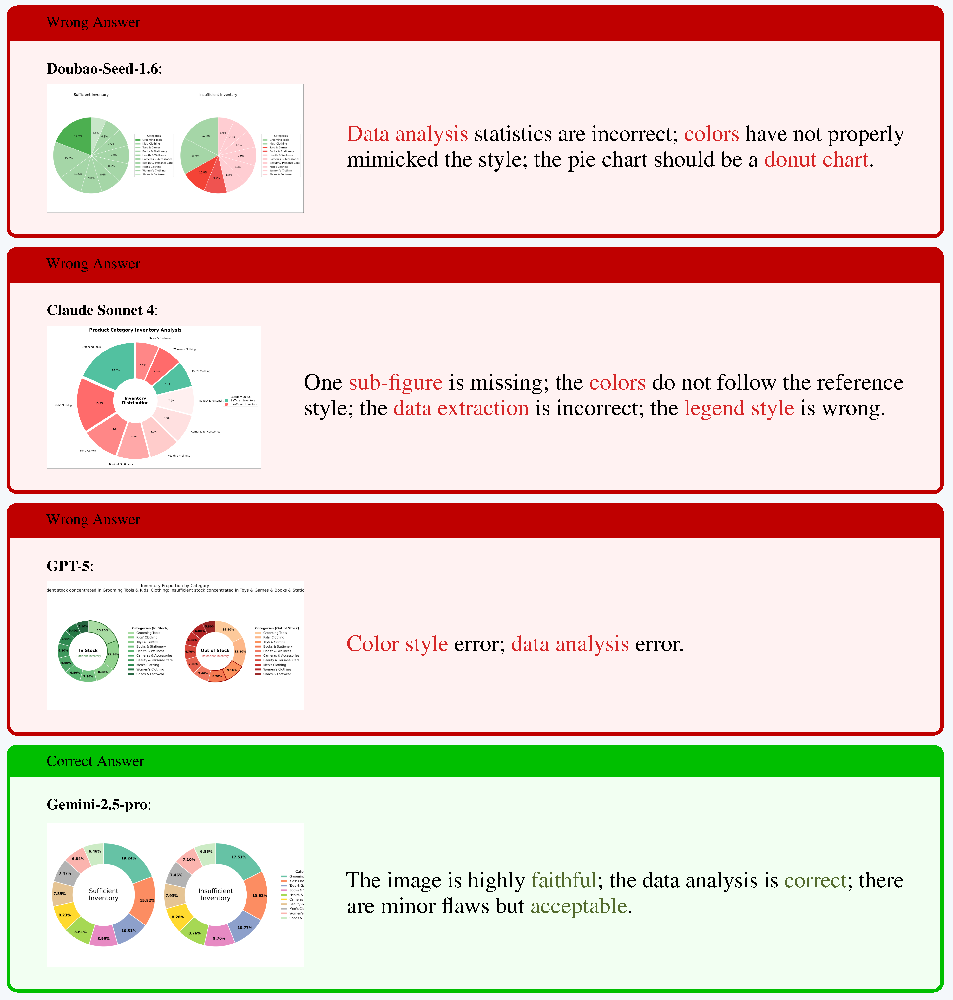
Evaluation Cases
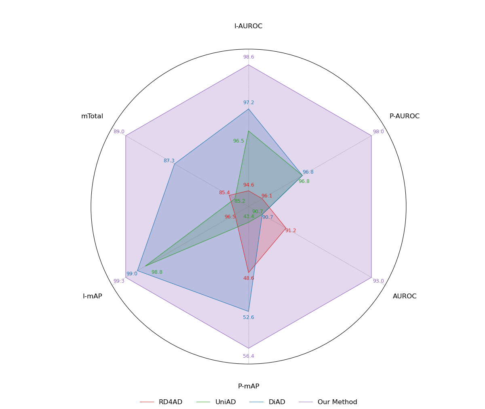
GT_Figure (Left)
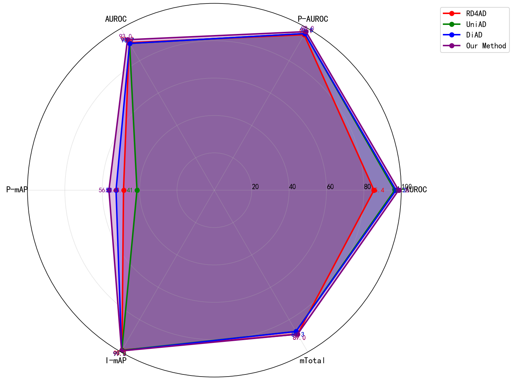
Generation_Figure (Right)
Detailed multi-dimensional evaluation statistics. By pairing related metrics, we observe comprehensive performance across API, Base, and standard Evaluation reports.
| Metric 1 (Score) | Metric 2 (Score) | Combined Reason / Key Insight |
|---|---|---|
| LLM Report (Overall Score: 38.50) | ||
| Chart Type (0.0) | Data Sim (0.0) | GT is normalized radial radar (radius [0.1,0.9]); GEN plots raw absolute values (0-100). Fundamentally different data mapping. |
| Visual Params (30.0) | Color (80.0) | Similar basic colors used, but GEN uses thicker lines, different markers ('o'), and varying radius scaling. |
| Layout (50.0) | Grid (40.0) | Figure size, theta offset, and limits differ. GT uses subtle dashed grey grid without y-ticks; GEN shows visible default radial ticks. |
| Legend (60.0) | Text Content (45.0) | Legend locations differ (bottom vs. upper-right). Numeric annotation formats, offsets, and tick labels differ significantly. |
| Base Report (Overall Weighted Score: 45.84) | ||
| Type F1 (1.00) | Layout F1 (1.00) | Perfect match in basic layout container and chart type detection. |
| Legend F1 (0.78) | Text F1 (0.78) | High similarity in legend content and overall text OCR results. |
| Visual Param (0.74) | Data Param (0.14) | Visual parameters closely match, but substantial errors exist in data extraction and mapping. |
| Color F1 (0.00) | Grid F1 (0.00) | Complete mismatch in color precision and grid configuration. |
| LMM Report (Final Similarity Score: 18.0) | ||
| Chart Type (100) | Color Style (80) | Both use radar charts. Colors are semantically consistent (red/green/blue/purple) with only minor hue/opacity differences. |
| Data (25) | Layout (30) | Major Errors: Axis alignment/mapping differs drastically; numeric labels do not match GT. Legend moved, title changed, and axis orientation rotated. |
| Summary: Charts share the same radar chart type and overall high/low ordering by series, but there are multiple clear visual mismatches: major data-axis alignment/annotation differences and substantial layout/annotation shifts (legend, ticks, orientation), plus minor color/style and numeric-label placement differences. | ||
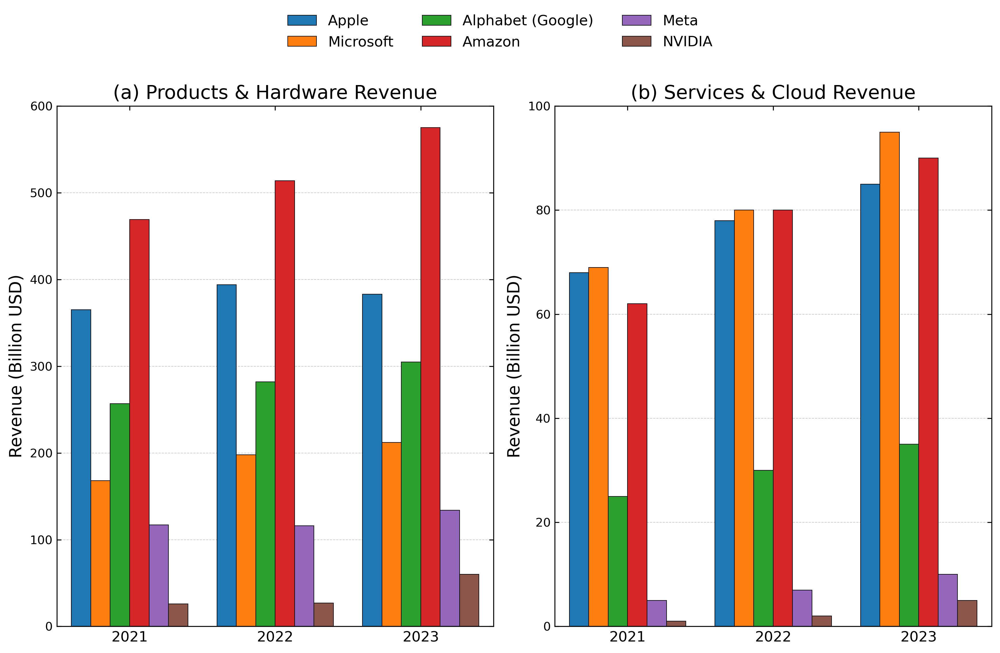
GT_Figure (Left)
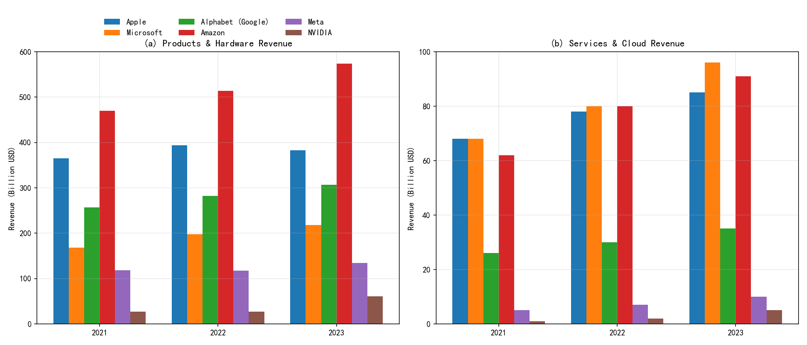
Generation_Figure (Right)
Detailed multi-dimensional evaluation statistics. By pairing related metrics, we observe comprehensive performance across API, Base, and standard Evaluation reports.
| Metric 1 (Score) | Metric 2 (Score) | Combined Reason / Key Insight |
|---|---|---|
| LLM Report (Overall Score: 85.00) | ||
| Chart Type (100.0) | Data Sim (65.0) | Both render side-by-side grouped vertical bar charts. Most values match, but several numeric differences exist (e.g., Microsoft 212 vs 218), producing perceptible height differences. |
| Visual Params (75.0) | Color (100.0) | Same color arrays used. Exact bar and figure sizes differ (13x8 vs 14x6), which slightly changes spacing and relative bar thickness. |
| Layout (80.0) | Grid (85.0) | Both have 1x2 subplots with horizontal y-axis grids. GT's grid is dashed and more prominent; placement methods for legends cause slight margin differences. |
| Legend (85.0) | Text Content (95.0) | Legends are centered above plots with matching entries. Titles and labels match exactly; GT explicitly sets larger font sizes. |
| Base Report (Overall Weighted Score: 77.67) | ||
| Type F1 (1.00) | Layout F1 (1.00) | Perfect structural match in basic layout container and chart type detection. |
| Data Param (0.99) | Color F1 (0.96) | Exceptional performance in extracting data values and precise color matching. |
| Text F1 (0.88) | Visual Param (0.85) | Strong alignment in text OCR results and visual parameter rendering. |
| Grid F1 (0.12) | Legend F1 (0.00) | Model struggles significantly with extracting legend configurations and grid properties. |
| LMM Report (Final Similarity Score: 85.0) | ||
| Chart Type (100) | Color Style (80) | Both are grouped vertical bar charts. Color hues are consistent; minor style differences exist in stroke thickness and bar edges. |
| Data (95) | Layout (80) | Heights, ordering, and trends match with negligible pixel differences. Minor shifts in font sizes, legend marker spacing, and subplot margins. |
| Summary: Charts are visually very similar with matching chart types, data trends, axes, and layout; only minor differences in styling (font weight/size, slight legend marker spacing) and extremely small numeric/text rendering variations are present. | ||
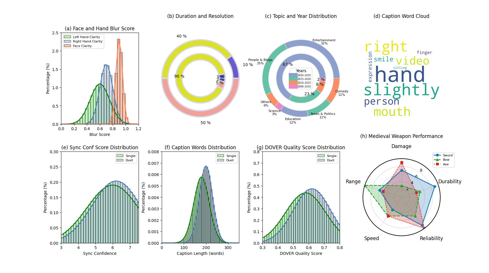
GT_Figure (Left)
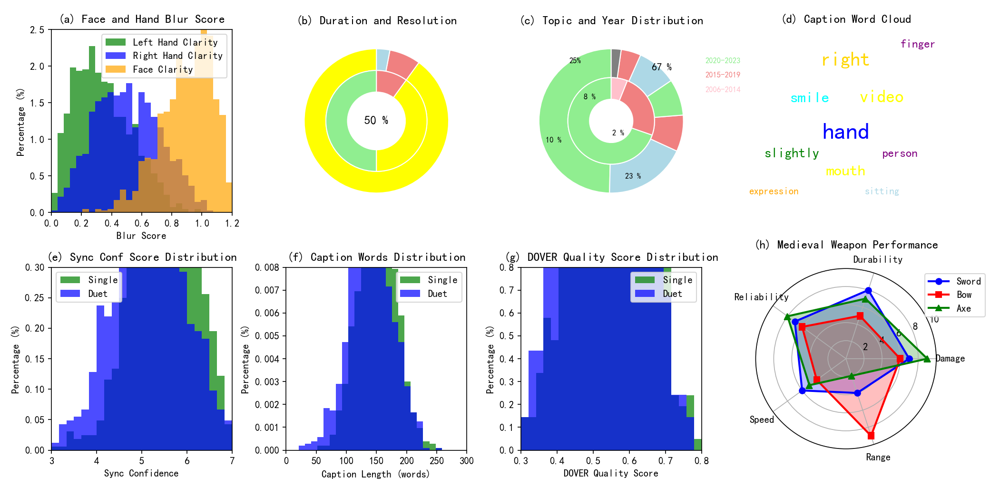
Generation_Figure (Right)
Detailed multi-dimensional evaluation statistics (Combination). By pairing related metrics, we observe comprehensive performance across API, Base, and standard Evaluation reports.
| Metric 1 (Score) | Metric 2 (Score) | Combined Reason / Key Insight |
|---|---|---|
| LLM Report (Overall Score: 39.50) | ||
| Chart Type (20.0) | Data Sim (25.0) | GT uses deterministic analytic plots and specific categorical values; GEN samples random data (np.random) and uses histogram-based density plots, completely altering the geometry and underlying distributions. |
| Visual Params (40.0) | Color (30.0) | GT applies specific bar widths, lw=2 overlays, and a light color palette (e.g., lightgreen); GEN uses default histogram styles and a mismatched green/blue/orange palette. |
| Layout (50.0) | Grid (70.0) | GT arranges a 2x4 grid (17x10) with specific polar dashed grids; GEN uses a 3x4 gridspec (16x12) with default Cartesian histogram grids, causing noticeable aspect differences. |
| Legend (60.0) | Text Content (45.0) | GT features precise legend locations and annotation texts (exact percentages); GEN uses default placements and simulates a word cloud with different text. |
| Base Report (Overall Weighted Score: 46.02) | ||
| Text F1 (83.92) | Type F1 (75.00) | Strong performance in text OCR and reasonable detection of the multiple basic chart types present. |
| Legend F1 (71.50) | Data Param (62.10) | Moderate alignment in legend extraction and data parameter identification, though overall recall remains insufficient. |
| Visual Param (54.71) | Color F1 (25.41) | Model struggles significantly with visual rendering parameters and shows severe color mismatches. |
| Layout F1 (0.00) | Grid F1 (0.00) | Complete failure in capturing the complex multi-subplot arrangement and grid configurations. |
| LMM Report (Final Similarity Score: 0.0) | ||
| Chart Type (100) | Color Style (0) | Successfully identifies the complex chart mix. However, Major Errors exist: missing KDE lines, hatching, bar outlines, and severe donut/wordcloud color mismatches. |
| Data (0) | Layout (0) | Major Errors: Fundamental data deviations (donut rings collapsed from 90%/40% to a single 50% ring). Subplot composition, aspect ratios, and KDE curve presence are entirely altered. |
| Summary: Automatic failure (0 score) triggered by multiple major errors. The model fails fundamentally in data presentation (e.g., random data sampling instead of deterministic plotting, collapsed donut rings) and layout composition (missing KDE curves, altered grid arrangement). | ||
Citation
@misc{tang2025chartscodehierarchicalbenchmark,
title={From Charts to Code: A Hierarchical Benchmark for Multimodal Models},
author={Jiahao Tang and Henry Hengyuan Zhao and Lijian Wu and Yifei Tao and Dongxing Mao and Yang Wan and Jingru Tan and Min Zeng and Min Li and Alex Jinpeng Wang},
year={2025},
eprint={2510.17932},
archivePrefix={arXiv},
primaryClass={cs.SE},
url={https://arxiv.org/abs/2510.17932},
}
Acknowledge: Thanks to Carlos & John for this webpage template. Also thanks to the SWE-bench team and their benchmark https://www.swebench.com/multimodal.html.
Template Usage: If you would like to use this website template for your own leaderboard, please send Carlos & John an email requesting permission. If granted, please make sure to acknowledge the SWE-bench team and link to this leaderboard on the home page of the website.